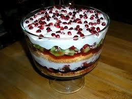

Holiday Trifle
Wednesday, October 5, 2011
By: Stella Zedman
A traditional trifle of berries, peaches and bananas, layered between slices of sponge cake, vanilla pudding and whipped cream, is sure to impress your guests and make a sensational centerpiece for your holiday sweet table.
Ingredients
•1 recipe Golden Yellow Cake (or purchased pound cake or sponge cake)
•6 cups (1.5 L) strawberries, raspberries, blueberries, peaches, bananas or any combination (fresh or frozen)
•1/4 cup (50 mL) sugar
•1 packet vanilla pudding mix, prepared
•1/4 cup (50 mL) sherry or liqueur (any kind you like)
•1 cup (250 mL) raspberry or apricot jam
•2 cups (500 mL) whipping cream
•additional whole berries or fruit for decorating
Directions
1.Cut the cake into slices (uneven or ragged is fine). Prepare whatever fruit you're using and cut into 1/2-inch (1-cm) pieces, if necessary. Place in a bowl and toss fruit with the sugar. Prepare the vanilla pudding. You'll need an attractive glass bowl, about 8 inches (20 cm) in diameter. Arrange about half of the cake pieces to cover the bottom of the bowl and sprinkle with about half of the sherry or liqueur. Spread cake pieces with half of the jam, then top with half of the fruit.
2.Cover the fruit with half of the vanilla pudding, followed by half of the whipped cream. Repeat the layers: the remaining cake, sherry, jam, fruit and pudding.
3.Finally, cover the top completely with the remaining whipped cream. Decorate with additional whole berries or fruit pieces. Cover with plastic wrap and refrigerate for at least 6 hours or overnight before serving.
